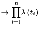
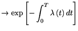

| HOME PAGE |
| Spike Density Estimation |
| - Histogram Method |
| - Kernel Method |
| Share it with your friend |
| Tweet |
| HOME PAGE |
| Spike Density Estimation |
| - Histogram Method |
| - Kernel Method |
| Share it with your friend |
| Tweet |
を時刻の間に発生したスパイクの数とする. 番目のスパイクの発生時刻を とする. スパイク発生時刻をまとめたベクトルを
とする. 各時刻の発火率が過去のスパイクに依存するとき時刻
の間にスパイクが一つ発生する確率は[Cox, 1962,Snyder, 1975,Daley and Vere-Jones, 1988,Johnson, 1996]
とする. スパイク発生時刻をまとめたベクトルを
とする. 各時刻の発火率が過去のスパイクに依存するとき時刻
の間にスパイクが一つ発生する確率は[Cox, 1962,Snyder, 1975,Daley and Vere-Jones, 1988,Johnson, 1996]
| (2.4) | ||
| (2.5) |
は条件付強度関数(conditional intensity function)と呼ばれる. 強度関数は一般には過去のスパイク発火の履歴に依存する. 強度関数が時刻の関数でないときは, その点過程は定常であるという. 時刻に依存する場合は非一様過程である. 強度関数が与えられればその点過程の統計的性質はすべて決まる. 強度関数が時刻と履歴の何れにもに依存しない場合, であり, 一様ポアソン過程(homogeneous Poisson point process)と呼ばれる. 強度関数が時刻に依存し，スパイク履歴には依存しない場合, であり, 非一様ポアソン過程(inhomogeneous Poisson point process), あるいは時間依存ポアソン過程（time-dependent Poisson point process）と呼ばれる.
強度関数が最後のスパイクの時刻にのみ依存する場合，
 となる．リニューアル過程はこのタイプのひとつで，条件付強度関数とISI分布の間に
となる．リニューアル過程はこのタイプのひとつで，条件付強度関数とISI分布の間に
条件付強度関数が与えられた下で, 次のスパイクが生じるまでの時間を数値計算したい. このためにはスパイク間隔の密度分布に従う乱数を発生させればよい[,,Johnson, 1996,Brown et al., 2001].
を一様乱数とする. 累積分布関数を考えると, 1.15からハザード関数を用いて
| (2.8) |
時間依存ポアソン過程に従うスパイク時系列
の確率密度分布(尤度関数)を求めよう. 2.3で見たように, 時刻から までスパイクが生じず, 時刻
までスパイクが生じず, 時刻 においてスパイクが生じる確率は
においてスパイクが生じる確率は
指数分布の導出で見たように, 尤度もいくつかの異なった方法で導出することができる. 区間
を幅 の
の 個の区間に区切る.
個の区間に区切る.  の大きさは１つの区間に高々１つのスパイクしか入らない程度に小さくとるとする. 番目の区間にスパイクの入る確率は
の大きさは１つの区間に高々１つのスパイクしか入らない程度に小さくとるとする. 番目の区間にスパイクの入る確率は
 , また入らない確率は
である. 区間毎に独立に考えることが出来るから,
確率密度は
, また入らない確率は
である. 区間毎に独立に考えることが出来るから,
確率密度は
![$\displaystyle =%
{\displaystyle\prod\limits_{j:\text{スパイク%
あり}}} \lambda\...
..._{j:\text{スパイク%
なし}}} \left[ 1-\lambda\left( j\Delta\right) \Delta\right]$](img367.gif) |
||
|  (as ) |
|  (as ) |
一般の点過程の尤度も, 非定常ポアソン過程と同様の方法で導出することができる. 強度（瞬間スパイク生成率）が条件付き独立(conditionally independent)であるから, 非定常ポアソン過程と同じように
スパイク発生が共変量の履歴に依存する場合など，強度関数が各種信号の過去の履歴にのみ依存するとき尤度関数は上記と同様の形で定式化することができる．多くの時系列点過程モデルはこの仮定に従うが，Neyman-Scottのクラスター点過程(Neyman-Scott cluster point process)モデルなど，このような仮定が成り立たない点過程も存在する．